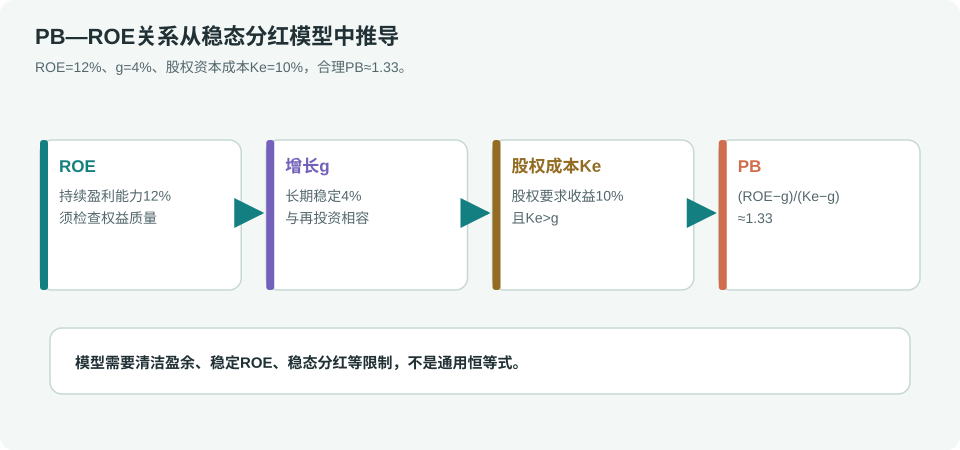
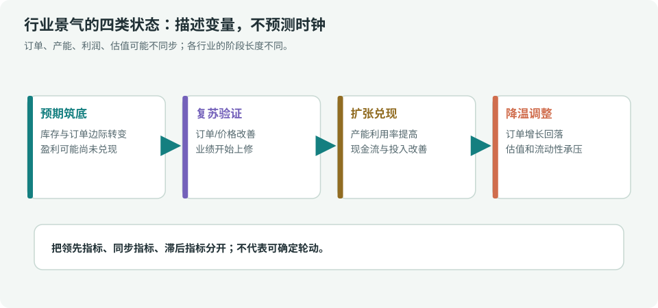
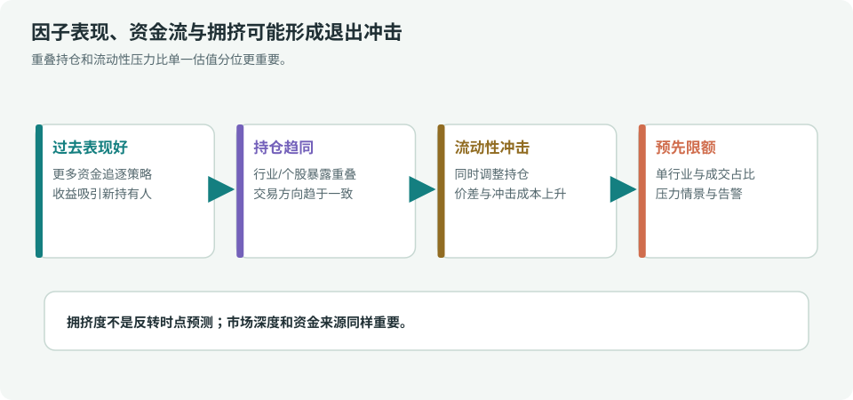

CHAPTER 22 · INDUSTRY VALUATION
行业估值与轮动：PB–ROE、景气与拥挤
用经营事实、稳态估值和市场可交易条件三层证据判断行业风险，而不是机械套用景气时钟。
行业PB只有0.8倍，为什么不一定比2倍PB更便宜？
两家企业市净率分别是0.8和2.0，但第一家ROE只有4%、权益资本成本12%，第二家ROE为18%、资本结构稳健且再投资收益率高。低PB可能是在反映权益回报低于股东要求收益，甚至资产减值风险；高PB也可能包含过于乐观的盈利预期。行业估值必须把账面权益质量、盈利能力、增长与风险折现放在相同口径比较。
行业轮动更难，因为市场可能提前反映需求复苏、库存去化和利润上修。研究应分别度量经营变化、估值状态、资金拥挤和实际可交易收益，不能把四阶段景气叙事当成确定的时间预测器。
PB–ROE的稳态关系：什么时候合理？
在利润通过清洁盈余关系进入账面权益、ROE长期稳定、再投资和分红满足同一个增长率g、股权资本成本Ke固定等条件下，可以从股利折现得到P/B≈(ROE−g)/(Ke−g)。这里的ROE是可持续的收益能力，不是某个高峰季度的值。

例子：ROE=12%，g=4%，Ke=10%，理论PB=(12−4)/(10−4)=1.33。注意它不是任何行业在2026年的实际PB，也不是保证价格向1.33回归的目标。若账面净资产包含大额商誉或坏账风险，账面权益本身也需要调整。
景气并非时钟：四类状态各用什么数据确认？
行业需求改善常先反映在订单、开工率、产成品库存和产能利用率；随后才进入营收确认、利润报表和现金回款。市场估值又可能在实际盈利改善前变化。因此所谓“预期筑底、复苏验证、扩张兑现、降温调整”是分析者区分变量的情景分类，而不是每个行业都会按序经历的可交易四阶段。

| 信息类型 | 观测变量 | 可能的时间风险 |
|---|---|---|
| 领先 | 新订单、渠道库存、投资计划 | 问卷/行业样本覆盖变动 |
| 同步 | 产量、价格、产能利用率 | 周期季节性、供需冲击 |
| 滞后 | 财报利润、现金流、资本开支 | 公告迟滞和数据重述 |
| 价格预期 | 风险溢价、PB、盈利修正 | 利好可能已充分定价 |
五维行业信号：先同类标准化，再组合评分
可以选用估值、经营景气、盈利预期修正、价格动量、拥挤度五个观察维度。每个维度都必须定义分母、观察窗口、方向以及何时可用。例如估值取行业历史分位数、景气取库存与订单变化、盈利修正取公开预测的历史版本；不同量纲不能直接加总。
若要组合成一个行业排序，先在可投资行业集合中标准化，再用事前固定的权重合成。拥挤度与估值可能同时受价格影响，不能把它们当成完全独立的信号。投资组合还应对行业/主题集中度、流动性、单期换手和相关性设置约束。
拥挤与流动性：为什么最热行业可能最难退出？
某个行业持续上涨会吸引ETF和主动基金增加配置，持仓重叠和成交额同步增加。若负面信息引起多个策略同向减仓，市场深度可能不足以用回测的中间价成交。拥挤的代理指标可包括基金持仓重叠、估值分位、成交占比、买卖价差与融资杠杆，但没有一个指标能够保证预测反转时点。

行业成分股可交易性还取决于停复牌、涨跌停、指数编制变化以及证券融资资格；用今天的行业成分回填历史会产生生存者偏差，无法证明某策略当时真正能构建出来。
如何构建可复核的行业轮动回测？
先明确研究对象：哪个市场、哪些行业、哪些可交易载体及基准？在每个月的决策时点，只使用已公布订单、财报与估值数据。信号固定后，在下一可交易时点调仓；若某ETF成交不足或标的停牌，应按模型规则记录未成交，而不是强行赋予理想成交价。
报告应同时包含相对宽基和等权行业组合的超额收益、交易成本后净收益、最大回撤、换手、单行业暴露、容量和样本外表现。将行业轮动参数反复调到最优后，再用同一期间计算绩效，是训练结果而非独立证据。
研究结论必须列出什么时候不应采用本模型
对盈利受极端会计调整影响的公司，ROE和PB很可能失真；当宏观价格变化改变资本成本，原PB–ROE估值矩阵的假设可能突然失效；当行业样本数据稀疏，所谓领先景气指标可能只反映个别企业而非全行业。若这些限制影响重要结论，应明示估值区间而非一个确定数字。
独立复核题
- ROE=12%、g=4%、Ke=10%，稳态理论PB是多少？
- 为什么景气阶段不能预测下一季行业收益方向？
- 为什么行业涨幅领先和持仓拥挤能够同时发生？
- 如何防止最新的行业成分和财报版本进入过去的月末回测？
资料来源和模型边界
- CFA Institute：Discounted Dividend Valuation
- CFA Institute：Market-Based Valuation Multiples
- CFA Institute：Company Analysis Past and Present
- CFA Institute：Backtesting and Simulation
理论PB仅适用相应的稳态分红与清洁盈余条件，不能视为行情预测。